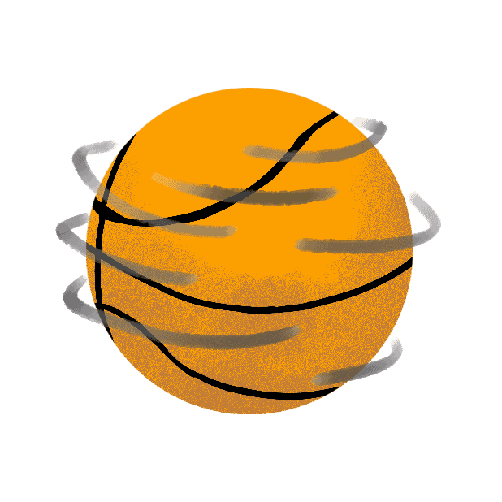
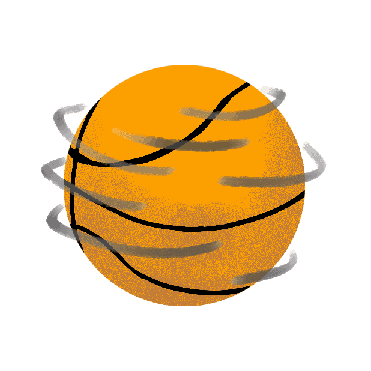

TRIGGERS
- Alpha microinteraction is triggered by hovering-on/hovering off the "Sign In" button.
- Beta microinteraction is triggered by clicking on the "Sign In" button.
RULES
- When hovering on, the becomes button adopts a white background with black text and a black border.
- When hovering on, the cursor changes to a hand pointer.
- When hovering off, the button changes back to it's original black background with white text while keeping the black border.
- When hovering off, the cursor changes back to the standard pointer arrow.
- When the button is clicked, a loading overlay will appear on screen.
- The overlay will depict a loading animation with a 70% opacity dark-grey background that fills the entire div, and a spinning light-grey basketball logo.
- While loading overlay is displayed, the sign-in information is being processed.
FEEDBACK
- When hovering on, the becomes button adopts a white background with black text and a black border.
- When hovering on, the cursor changes to a hand pointer.
- When hovering off, the button changes back to it's original black background with white text while keeping the black border.
- When hovering off, the cursor changes back to the standard pointer arrow.
- When the button is clicked, a loading overlay will appear on screen.
- The overlay will depict a loading animation with a 70% opacity dark-grey background that fills the entire div, and a spinning light-grey basketball logo.
LOOPS/MODES
- Loop: The basketball will continue to spin until the data has been processed.
 
